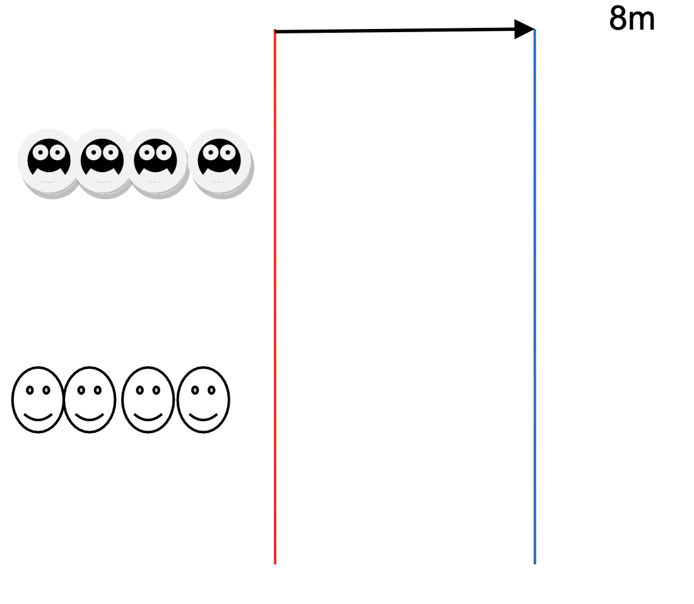

Objectif d'apprentissage
Découverte de la notion d'équipe. Réaliser des actions motrices de plus en plus complexes en fonction de déplacements, saisies et parcours imposés.
But
Réaliser le parcours en entier.
Critères de réussite
- L'équipe qui arrive la première a gagné.
Règles
- Par équipes de 4, se déplacer le plus rapidement possible de la ligne rouge à la ligne bleue, en étant accrochés les uns aux autres.
- Si la chenille se détache, revenir au point de départ.
Organisation
Distance entre les deux lignes : 8 mètres. Au signal, les équipes effectuent leur course.
Modalités d'exécution
- Gérer sa vitesse pour rester accrochés.
Évolutions
- Varier les parcours : zigzags, tours de cerceau, passer sous une barre...
- Varier les déplacements : à quatre pattes, à genoux, en marche arrière...
- Varier les manières de s'accrocher : à la taille, avec une main, aux épaules...